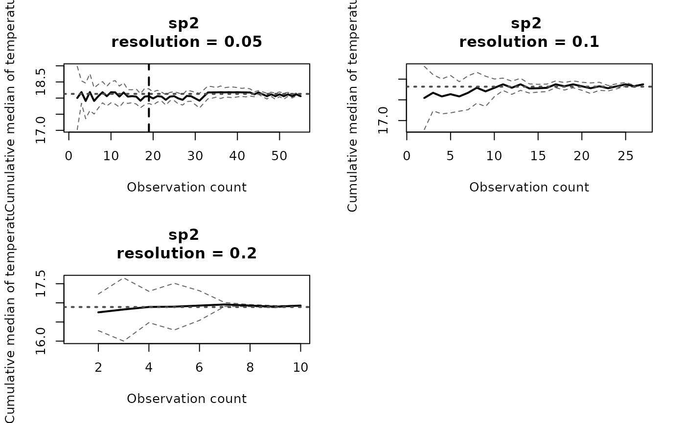
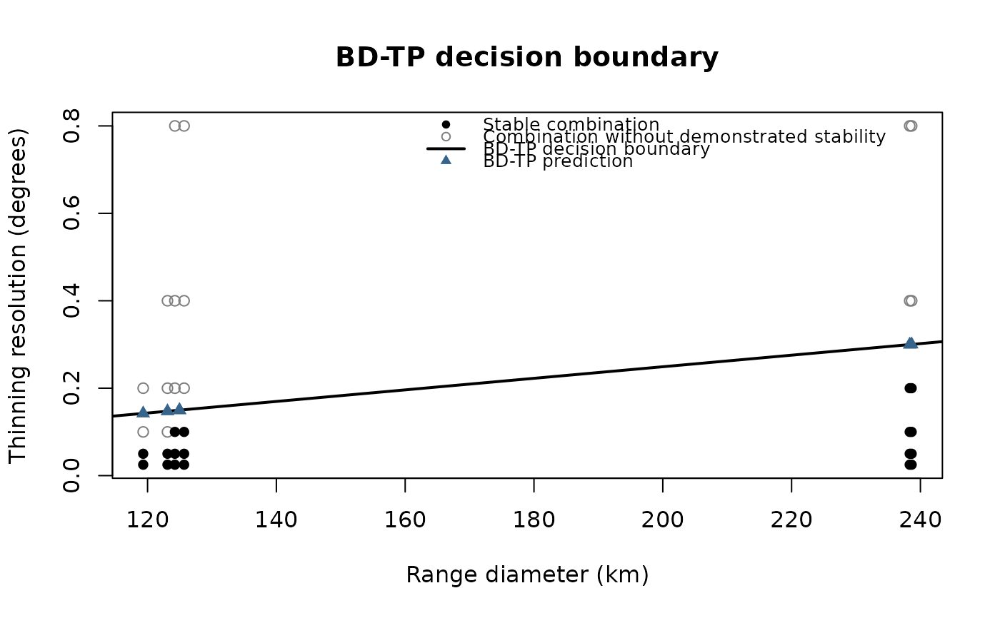
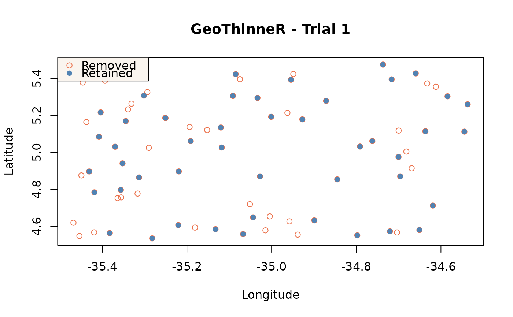

Estimate Spatial Thinning Parameters
Source:R/estimate_thinning_parameter.R
estimate_thinning_parameter.RdEstimates grid-based spatial thinning parameters by evaluating the stability of the cumulative median of an environmental variable across candidate grid resolutions. Parameters are selected using the Last Stable Thinning Parameterization (LS-TP) or predicted from geographic range size using the Biogeographic-size Dependent Thinning Parameterization (BD-TP) (Ibáñez et al. 2026).
Usage
estimate_thinning_parameter(
data,
lon_col = "lon",
lat_col = "lat",
group_col = NULL,
env_col,
param_method = c("ls-tp", "bd-tp"),
range_resolution = 0.5,
resolutions = c(0.001, 0.01, 0.1, 1, 2.5, 5, 7.5, 10, 12.5, 15, 17.5),
replicates = 10,
max_samples = 500,
median_tolerance = 0.3,
interval_tolerance = 0.5,
stable_window = 20,
tail_n = 20,
seed = NULL,
keep_curves = FALSE,
verbose = FALSE,
origin = NULL,
n = 1
)Arguments
- data
A data frame containing the input points to thin. Must contain longitude and latitude coordinates, one numeric environmental variable, and optionally a grouping column.
- lon_col, lat_col
Longitude and latitude column names, in decimal degrees (WGS84). Defaults are `"lon"` and `"lat"`.
- group_col
Optional grouping column (e.g., species). If `NULL`, all records are treated as one group.
- env_col
A character name of the column with the numeric environmental variable used to evaluate stability. Tolerances use the units of this variable.
- param_method
Parameterization method to use. One of `"ls-tp"` (Last Stable Thinning Parameterization) or `"bd-tp"` (Biogeographic-size Dependent Thinning Parameterization).
- range_resolution
Resolution in degrees of the global WGS84 occupancy grid used to calculate physical occupied-cell area for BD-TP (default: `0.5`). The resolution must divide both 180 degrees of latitude and 360 degrees of longitude into whole cells. Only used when `param_method = "bd-tp"`.
- resolutions
Numeric vector of candidate grid resolutions, in degrees, to evaluate.
- replicates
Number of random sampling replicates used to estimate cumulative moving median trajectories (default: `10`).
- max_samples
Maximum number of retained observations sampled without replacement per group and resolution (default: `500`).
- median_tolerance
Maximum absolute difference, in the units of the environmental variable `env_col`, between the median trajectory and terminal reference (default `0.3`).
- interval_tolerance
Maximum trajectory-interval width, in the units of the environmental variable `env_col` (default `0.5`).
- stable_window
Minimum number of consecutive observation counts required for stability (default: `20`).
- tail_n
Number of final observation counts used to calculate the terminal reference (default: `20`).
- seed
Optional integer seed for reproducibility.
- keep_curves
Logical. Whether to retain replicate-level moving-median curves. Summarized trajectories needed for stability plots are always retained. Default is `FALSE`.
- verbose
Show a progress bar if `TRUE`.
- origin
Optional two-value grid origin. Changing the origin may change cell assignments and estimates.
- n
Number of records retained per grid cell. This is fixed at `1` and is an explicit argument to prevent partial matching with `replicates`.
Value
A `GeoThinningParameter` object containing:
`estimated_parameters`: main named numeric estimates.
`estimates`: group-level estimates and diagnostics.
`stability`: one row per group and candidate resolution.
`settings`: reproducibility and methodological settings.
`trajectories`: summarized cumulative-median trajectories.
`curves`: optional replicate trajectories.
`range_descriptors`: BD-TP geographical descriptors, otherwise `NULL`.
`model`: BD-TP SVM and boundary, otherwise `NULL`.
`call`: matched function call.
LS-TP `estimates` contain `group`, `estimated_parameter`, `stabilization_threshold`, `stabilization_fraction`, `n_retained`, `n_env_finite`, `interval_width_at_stabilization`, and `selection_status`.
BD-TP `estimates` contain `group`, `estimated_parameter`, `raw_predicted_resolution`, `range_diameter_km`, `any_stable_resolution`, `lower_bound_applied`, and `resolution_extrapolated`.
`stability` contains `group`, `resolution`, `n_retained`, `n_env_finite`, `n_sampled`, `stabilization_threshold`, `stabilization_fraction`, `reference_value`, `interval_width_at_stabilization`, `stability_reached`, and `stability_status`. BD-TP additionally includes `range_diameter_km`. `n_sampled` is the maximum cumulative sample size used, not the number of original occurrence records. `stability_status` is one of `"stable"`, `"stability_not_reached"`, or `"insufficient_observations"`.
`trajectories` contain `n_obs`, `median_trajectory`, `trajectory_sd`, `replicates`, `trajectory_se`, `interval_lower`, `interval_upper`, `group`, and `resolution`. Curves contain `replicate`, `n_obs`, `cumulative_median`, `group`, and `resolution`.
Details
For every candidate resolution, one grid-thinning realization is generated. Up to `max_samples` retained values are sampled without replacement in `replicates` random orders. Their cumulative medians are summarized at each observation count by the replicate median and by `median +/- 1.96 * sd / sqrt(B)`. The standard deviation is calculated across replicate cumulative medians and `B` is the replicate count. This interval is a consistency measure for randomized trajectories.
The terminal reference is the mean of up to the final `tail_n` median trajectory values. `stabilization_threshold` is the first observation count in the earliest run of `stable_window` consecutive positions meeting both tolerances. The trajectory at observation count 1 is undefined, so at least `stable_window + 1` observations are needed to assess stability. Shorter trajectories are marked `"insufficient_observations"` in `stability`.
LS-TP selects the largest tested stable resolution. If none is stable, it returns `0.001` degrees with `selection_status = "no_stable_parameter"`. This is a fallback, not a validated stable resolution.
BD-TP uses the areas of occupied cell calculated with `terra::cellSize()` and a linear SVM to predict a resolution from geographic range size. Combinations with at least three sampled finite environmental values enter the SVM. Those without demonstrated stability, including insufficient combinations, form the stability not demonstrated class. Their original status remains in `stability`. Predicted resolutions are bounded below at `0.001` degrees; `resolution_extrapolated` marks predictions outside the tested range.
Estimated parameters are not guaranteed to eliminate sampling bias or retain the complete ecological niche. Estimation and application are separate: subsequently call `thin_points()` with one estimated resolution.
References
Ibáñez, H., Bidegain, G., Sáez de Ocáriz, H., Mestre-Tomás, J., Verbruggen, H., Jueterbock, A. O., & Becerro, M. A. (2026). Stop guessing thinning distances: a data-driven framework for spatial thinning parametrization for ecological modelling. bioRxiv, 2026-10. https://doi.org/10.64898/2026.10.23.759308
Examples
# Simulate six species with different geographical range sizes.
set.seed(42)
species_names <- paste0("sp", 1:6)
spreads <- c(0.30, 0.45, 0.65, 0.95, 1.35, 1.85)
example_data <- do.call(rbind, lapply(seq_along(species_names), function(i) {
n <- 80
center_lon <- -140 + 35 * (i - 1)
center_lat <- -25 + 10 * (i - 1)
lon <- center_lon + runif(n, -spreads[i] / 2, spreads[i] / 2)
lat <- center_lat + runif(n, -spreads[i] / 2, spreads[i] / 2)
data.frame(
lon = lon,
lat = lat,
species = species_names[i],
temperature = 16 + i + 0.8 * (lon - center_lon) / spreads[i] + rnorm(n, sd = 1.4))
}))
candidate_resolutions <- c(0.025, 0.05, 0.1, 0.2, 0.4, 0.8)
# LS-TP: find the largest stable grid resolution for each species.
ls_fit <- estimate_thinning_parameter(
example_data,
group_col = "species",
env_col = "temperature",
resolutions = candidate_resolutions,
replicates = 5,
max_samples = 60,
seed = 123
)
print(ls_fit)
#> GeoThinningParameter - LS-TP
#> Environmental variable: temperature
#> Groups evaluated: 6
#> Resolutions tested: 6
#> Groups with stability: 6/6
#>
#> Estimated thinning resolutions (degrees):
#> sp1 sp2 sp3 sp4 sp5 sp6
#> 0.05 0.05 0.10 0.10 0.20 0.20
summary(ls_fit)
#> Summary of Thinning Parameter Estimates
#> ---------------------------------------
#> Parameterization method: LS-TP
#> Environmental variable: temperature
#> Groups evaluated: 6
#> Resolutions evaluated: 6
#> Groups with stability: 6/6
#>
#> Group Resolution (°) Stable run starts (n) Retained Status
#> sp1 0.05 8 31 Stable
#> sp2 0.05 19 55 Stable
#> sp3 0.10 14 38 Stable
#> sp4 0.10 9 48 Stable
#> sp5 0.20 9 41 Stable
#> sp6 0.20 10 56 Stable
#>
#> Stability is identified when both criteria are met for 20 consecutive observation counts (by default). The value shown is the first count in that sequence.
ls_fit$estimated_parameters
#> sp1 sp2 sp3 sp4 sp5 sp6
#> 0.05 0.05 0.10 0.10 0.20 0.20
plot(ls_fit, group = "sp2", resolution = c(0.05, 0.1, 0.2))

# BD-TP: predict thinning resolution from geographical range diameter.
if (requireNamespace("e1071", quietly = TRUE)) {
bd_fit <- estimate_thinning_parameter(
example_data,
group_col = "species",
env_col = "temperature",
param_method = "bd-tp",
resolutions = candidate_resolutions,
replicates = 5,
max_samples = 60,
seed = 123
)
bd_fit$estimated_parameters
plot(bd_fit)
}

# Apply the estimated LS-TP resolution to one species.
sp4 <- subset(example_data, species == "sp4")
thinned_sp4 <- thin_points(
sp4,
method = "grid",
resolution = unname(ls_fit$estimated_parameters[["sp4"]]),
seed = 123
)
plot(thinned_sp4)
